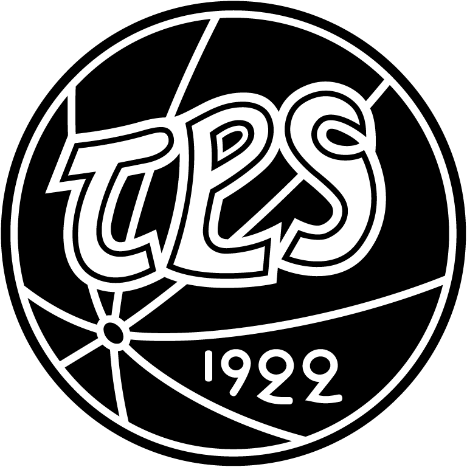

| Veikkausliiga | Suomen Cup |
|---|---|
| Kultaa 1928, 1939, 1941, 1949, 1968, 1971, 1972, 1975 | Kultaa 1991, 1994, 2010 |
| Hopeaa 1923, 1925, 1926, 1930, 1938, 1944, 1948, 1960, 1984, 1986, 1989 | Hopeaa 1965, 1979, 1996, 1997, 2005 |
| Pronssia 1929, 1931, 1957, 1967, 1977, 1987, 1996, 2007, 2009, 2010, 2012 |
Peliasun värit: